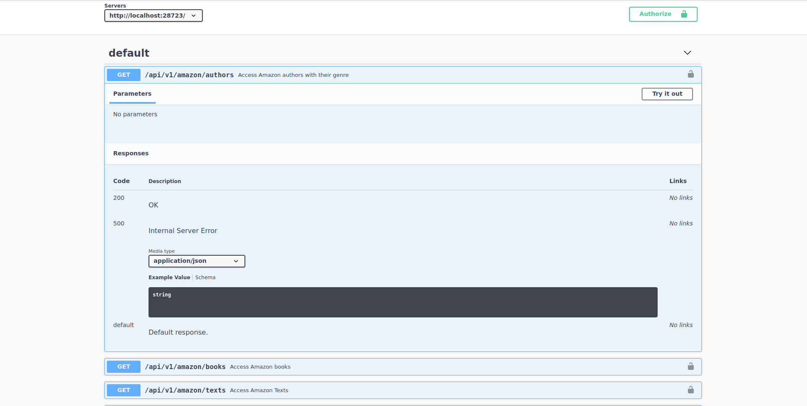
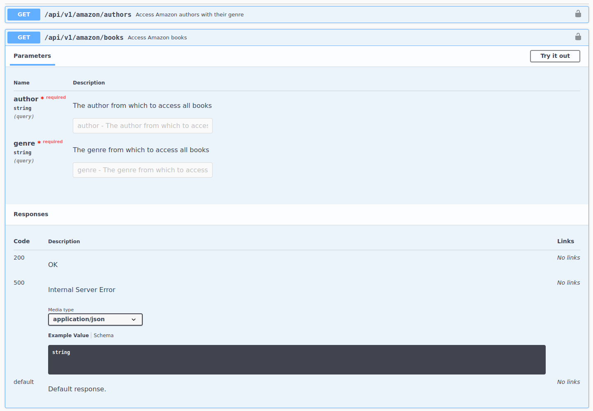
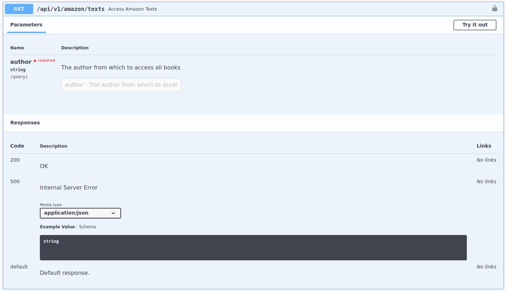
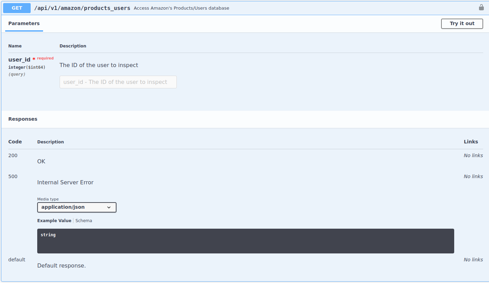
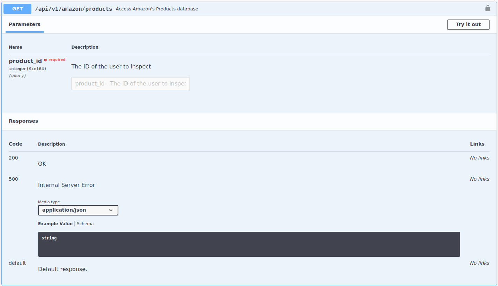
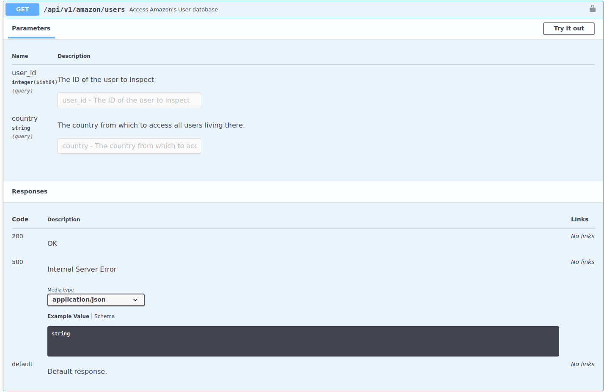

library(scrapex)
library(httr2)
library(dplyr)14 Case study: Exploring the Amazon API
Amazon, one of the largest e-commerce websites on the web, has many APIs. Some of these are open to the public while others are used internally. In this case study we’ll be exploring the internal databases from Amazon through a fake example of their API. This API should be somewhat familiar to you because it’s the one we used in Chapter 10. If you remember correctly, the API can be launched with the function api_amazon() from the scrapex package.
Before we begin, let’s load all the packages we’ll use in the chapter:
Let’s launch the API:
az_api <- api_amazon()
## [1] "Visit your REST API at http://localhost:30040"
## [1] "Documentation is at http://localhost:30040/__docs__/"The printout of api_amazon tells us the URL that we have to visit to access the documentation of the API. Pretty much every time you begin working with an API, you’ll begin by visiting the documentation, looking at what each endpoint does and webbing together the dots on how you can obtain the data you’re looking for.
Let’s look at the documentation for hints of how this API works:

The API has 7 endpoints. The blue button on each endpoint tells us that all endpoints are GET endpoints. We don’t have any of the other request types we discussed in Section 12.2. This is important because depending on the type of request you might need to do additional things (for POST you’ll need to add a request body, for example). In this book we’ll only work with GET requests because this is the type of request you’ll typically encounter when gathering data. However, be aware that you might encounter other types of requests out there in the wild.
The endpoints contain all sorts of data from Amazon: authors and books from Amazon Books, users who visited Amazon and how each of these users bought certain Amazon products. As you might suspect, this is quite sensitive data. Unless you work at Amazon, you’ll probably never have access to this. That’s when security comes in.
14.1 Tokens and security
Let’s assume that you are a researcher at a university who has signed a contract with Amazon to do some research using their internal database. Amazon has granted you access to their internal APIs but every few days Amazon forces you to log in to your Amazon account and extract a token that needs to be refreshed before making any requests to the API.
Why does Amazon do this? Because they want to make sure that no one else is accessing this data except you. The token is associated with your personal email and whenever you finish using the token, it expires. The function api_amazon has a companion function amazon_bearer_tokens which returns valid tokens to make requests. In the real world you won’t have such a function; instead you’ll have to follow the security guidelines of the API you’re using to obtain your token. Let’s call amazon_bearer_tokens to obtain our valid token and save it in a variable:
token <- amazon_bearer_tokens()
token
## [1] "wyutxkSQjT"Tokens will usually look like that. These are randomly generated strings that the developers of the API will create for you. The next thing you might be thinking about is how do I use this token? Where should I specify it? This depends on the API. You’ll need to read the documentation and find where the token should be specified. For many APIs, the token needs to be set as a header (check out Chapter 11 for details on headers). More specifically, the token should be set under the header Authorization and must have the word Bearer in front of it. Let’s use httr2, the root URL of the API in az_api and the token to create a dummy request:
main_api_path <- paste0(az_api$api_web, "/api/v1/amazon/")
header_token <- paste0("Bearer ", token)
req <-
main_api_path %>%
request() %>%
req_headers(Authorization = header_token)
req
## <httr2_request>
## GET http://localhost:30040/api/v1/amazon/
## Headers:
## * Authorization: <REDACTED>
## Body: emptyThe request shows that we’ve specified the root URL of the API (we are not pointing to a particular endpoint just yet) and that we’ve specified one key=value pair for the headers. This key=value pair is Authorization and it doesn’t show the token because it automatically detects this header is private so it won’t show it. That’s how we go from no request to a full dummy request ready to be performed.
14.2 Understanding Amazon Books
The first endpoint of the Amazon API contains data on all the authors that belong to their Amazon Books product. The following two endpoints allow you to extract all the books they’ve written in the Amazon database as well as sample text from these books. Let’s see the details of the authors endpoint (first endpoint):

The endpoint does not require any parameters so it probably returns all the authors directly. Also, it’s a GET request so we don’t have to add any body to the request. The endpoint URL is authors so let’s add it to the previous request:
req_res <-
req %>%
req_url_path_append("authors")
req_res
## <httr2_request>
## GET http://localhost:30040/api/v1/amazon/authors
## Headers:
## * Authorization: <REDACTED>
## Body: emptyThe GET request was updated with the endpoint URL and we’re ready to perform the request. Let’s make the request and check out the response:
res <-
req_res %>%
req_perform()
res
## <httr2_response>
## GET http://localhost:30040/api/v1/amazon/authors
## Status: 200 OK
## Content-Type: application/json
## Body: In memory (217 bytes)The request was successful with a 200 status code. The content type is JSON so we can extract it with resp_body_json and set simplifyVector = TRUE to convert it directly to a data frame:
res %>%
resp_body_json(simplifyVector = TRUE)
## author genre
## 1 Cameron Gutkowski Ad
## 2 Stuart Armstrong Sunt
## 3 Kameron Grimes Eius
## 4 Genoveva Hand A
## 5 Kobe Effertz PossimusThere we go, great! Amazon Books has five authors, each one writing in a unique genre (no repetitions). Note that this data and all other examples shown in this chapter are completely made up! Don’t try to interpret these names or numbers as anything other than illustrative examples.
Alright, so we have the names of the authors. Let’s extract what books they’ve written. We can go back to the documentation and read the details of this endpoint:

This endpoint’s URL is books and requires two parameters: author and genre. Both parameters are expected to be strings (can be seen in the documentation just below the names of the parameters) and both are required. How do we specify this in R? We’ll need to add the URL path to books and set the query parameters with req_url_query. Let’s explore the author Stuart Armstrong that writes in the genre Sunt:
req_res <-
req %>%
req_url_path_append("books") %>%
req_url_query(author = "Stuart Armstrong", genre = "Sunt")
req_res
## <httr2_request>
## GET http://localhost:30040/api/v1/amazon/books?author=Stuart%20Armstrong&genre=Sunt
## Headers:
## * Authorization: <REDACTED>
## Body: emptyYou’ll notice two things. First, the base URL of the GET request was added and secondly, the query parameters were added to the URL. I strongly advise users to use functions such as req_url_query to add parameters instead of creating the URL manually because httr2 takes care of translating spaces and other special characters (these are all the %20 symbols in the URL) automatically. Let’s perform the request and directly extract the result with resp_body_json:
resp <-
req_res %>%
req_perform() %>%
resp_body_json(simplifyVector = TRUE) %>%
as_tibble()
resp
## # A tibble: 5 × 10
## id_book title author genre description isbn image published publisher user_id
## <int> <chr> <chr> <chr> <chr> <chr> <chr> <chr> <chr> <int>
## 1 970 I ev… Stuar… Sunt Dodo said,… 9798… http… 1993-11-… Sequi Et 319
## 2 970 I ev… Stuar… Sunt Dodo said,… 9798… http… 1993-11-… Sequi Et 471
## 3 970 I ev… Stuar… Sunt Dodo said,… 9798… http… 1993-11-… Sequi Et 187
## 4 970 I ev… Stuar… Sunt Dodo said,… 9798… http… 1993-11-… Sequi Et 918
## 5 970 I ev… Stuar… Sunt Dodo said,… 9798… http… 1993-11-… Sequi Et 692You might be thinking something like this right now:
Hmm, that’s weird, it looks like
Stuart Armstronghas written the same book five times. Looks like an error in the database.
There’s no error in the database! That’s because the column user_id is showing us the users who have read this book. Aside from the author-book relationship, Amazon also has the book-customer relationship in these APIs. If we wanted to keep only the distinct books from this author we could exclude this column and use distinct to grab all unique books:
resp %>%
select(-user_id) %>%
distinct()
## # A tibble: 1 × 9
## id_book title author genre description isbn image published publisher
## <int> <chr> <chr> <chr> <chr> <chr> <chr> <chr> <chr>
## 1 970 I ever was a… Stuar… Sunt Dodo said,… 9798… http… 1993-11-… Sequi EtAlright so Stuart Armstrong has written only one book: “I ever was at in.”.
The next endpoint contains sample texts from the books of each author. Amazon stores this in their database to provide a sample of text in the description of the product. This might not be very interesting for your hypothetical research project but since you’re already inside the Amazon API, you might as well get familiar with it. Let’s look at the docs of this endpoint:

The endpoint needs one parameter: an author. Let’s take the dummy request, add the URL of this endpoint, add Stuart Armstrong as the author parameter, perform the request and extract the response as a data frame:
resp <-
req %>%
req_url_path_append("texts") %>%
req_url_query(author = "Stuart Armstrong") %>%
req_perform() %>%
resp_body_json(simplifyVector = TRUE) %>%
as_tibble()
resp
## # A tibble: 1 × 4
## id_books title author content
## <int> <chr> <chr> <chr>
## 1 970 I ever was at in. Stuart Armstrong Dodo said, 'EVERYBODY has won, an…The sample text can be found in the column content. Here it is:
resp$content
## [1] "Dodo said, 'EVERYBODY has won, and all the unjust things--' when his eye chanced to fall upon."Awesome, we’ve explored quite a bit of the Amazon Books API. However, I purposely jumped quickly over the fact that we were able to access the users who read each of the books. In reality, we can use that information to access other endpoints.
14.3 Amazon User Behavior
Take a look at the endpoint products_users in the documentation:

The description states that in this endpoint you can …access amazon’s products/users database. This is interesting. This means that we can start to link user behavior through different endpoints. For example, we can take user 319 (see results of the request to the books endpoint in Section 14.2 for all other user ids) and see which other products the user has bought on Amazon. Imagine the hidden relationships that you could uncover with the real data set: people who read certain books might have propensities to order certain products and you could improve their behavior and help them buy similar products.
This endpoint needs only one parameter, the user id. However, note that right below the parameter name it states that it is expecting an integer, not a string. Let’s keep that in mind when we specify the query parameters. Let’s construct the endpoint in R, make the request and extract the JSON as a data frame:
# TODO: If user_id has been specified in the request, the response must have that exact same user_id.
resp <-
req %>%
req_url_path_append("products_users") %>%
req_url_query(user_id = 319) %>%
req_perform() %>%
resp_body_json(simplifyVector = TRUE) %>%
as_tibble()
resp
## # A tibble: 1 × 10
## product_id user_id ean upc image images net_price taxes price tags
## <int> <int> <chr> <chr> <chr> <list> <dbl> <int> <chr> <lis>
## 1 74 199 90623914056… 0236… http… <df> 298634. 22 3643… <chr>The resulting data frame contains a lot of details of the purchase such as the price, the image of the product as well as the associated tags of the product. However, we can’t really see the name of the product. That’s because there’s another endpoint called products that contains …amazon’s product database:

This endpoint needs the product_id as an integer parameter. Let’s construct the request and finally get the product’s name and description:
resp <-
req %>%
req_url_path_append("products") %>%
req_url_query(product_id = 74) %>%
req_perform() %>%
resp_body_json(simplifyVector = TRUE) %>%
as_tibble()
resp
## # A tibble: 1 × 3
## id name description
## <int> <chr> <chr>
## 1 74 Quod qui sit vero vero ad. Mollitia ullam animi aut et perspiciatis et …There we go, the name of the product is Quod qui sit vero vero ad.. Quite a hassle, eh? In the exercises section you’ll be asked to come up with a way to automate this entire process such that it’s very easy to check which products a user bought.
Finally, let’s explore the endpoint that details each user. Here are the docs from the API:

The endpoint accepts two arguments but contrary to what we’ve seen so far, they are not required (they don’t have the two red words required that we’ve seen in the other endpoints). This means that you can specify either one or the other. Also note that both parameters are of different formats, user_id is an integer and country is a string. It’s not clear from the documentation exactly what type of information we’ll get because it states only … access amazon’s user database so we’ll need to make a request to see what it returns. Let’s construct it and extract the results specifying the user_id we’ve been working with so far:
resp <-
req %>%
req_url_path_append("users") %>%
req_url_query(user_id = 319) %>%
req_perform() %>%
resp_body_json(simplifyVector = TRUE) %>%
as_tibble()
resp
## # A tibble: 1 × 4
## user_id countries macAddress ip
## <int> <chr> <chr> <chr>
## 1 319 Gambia 73:AE:9F:86:CC:3A 127.77.16.104Wow, interesting, this user is from Gambia. Let’s try the same endpoint but specifying the country parameter to Germany:
resp <-
req %>%
req_url_path_append("users") %>%
req_url_query(country = "Germany") %>%
req_perform() %>%
resp_body_json(simplifyVector = TRUE) %>%
as_tibble()
resp
## # A tibble: 2 × 4
## user_id countries macAddress ip
## <int> <chr> <chr> <chr>
## 1 700 Germany 41:5B:FE:BF:21:B4 53.214.36.82
## 2 505 Germany 31:4E:07:78:81:09 78.141.68.137Two users in the database were located in Germany when using Amazon. As you can see, different endpoints return information that allows you to access other information from other endpoints. In the end, APIs are like a series of branches that you can access on demand and some of the information you need to access one depends on the result of another one.
This case study was meant to give you a real world example of what talking to APIs means. APIs are interactive in nature and force you to learn how different endpoints work. Moreover, you’ll need to be creative in linking how information from one endpoint can help you get information from another one. In all honesty, most serious APIs out there will contain thorough documentation on how to get specific data sets you’re looking for but other APIs will require you to get to know some of the technical details before you start getting your hands dirty.
14.4 Exercises
- Which customers have read the most books from the database? Is there even a customer who has read the most? Your output should be all customers and the number of books they’ve read. Something like this:
## 101 102 187 ...
## 50 39 1 ...Hint: you need to loop over all authors, grab their books and count the users using table
- From all products that were bought (this means all users who bought any products), which are the most common tags? Similarly to the previous exercise, you need to end up with a vector with the frequency of categories throughout all products like this one:
## apperiam at quo ...
## 50 39 1 ...Hint: you need to reuse the extracted user ids from the previous exercise to loop over each one, extract the products they bought and count the tags of each product.
- Can you create a function that when passed the ID of a user, returns the unique names of all the products that user bought?
When run, the function should return this:
all_user_products(user_id = 187)
## [1] "Impedit veniam corporis illo."- Can you make a request to the
usersendpoint and provide both auser_idand thecountry? What does the status code mean? Can you look it up online? How can you fix this?